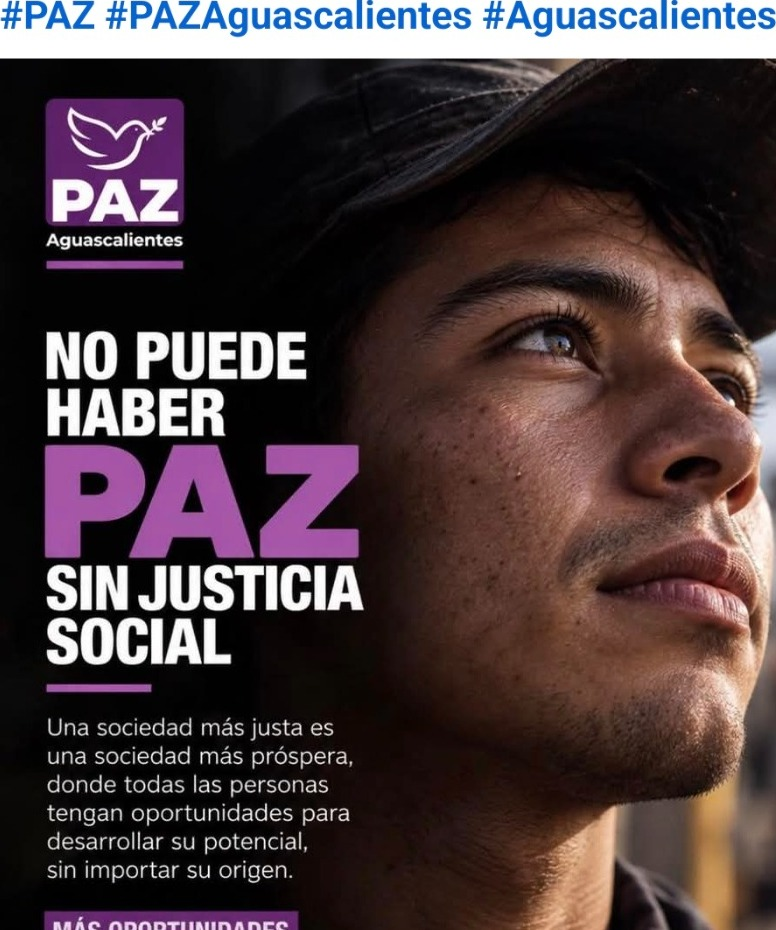
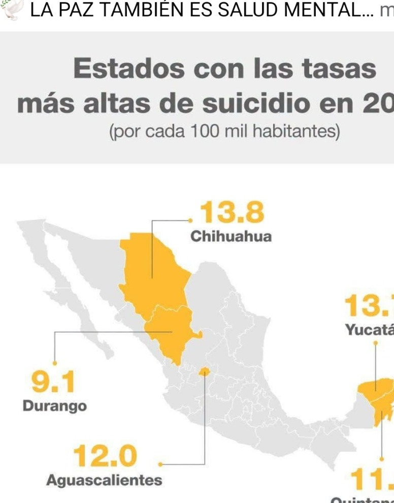
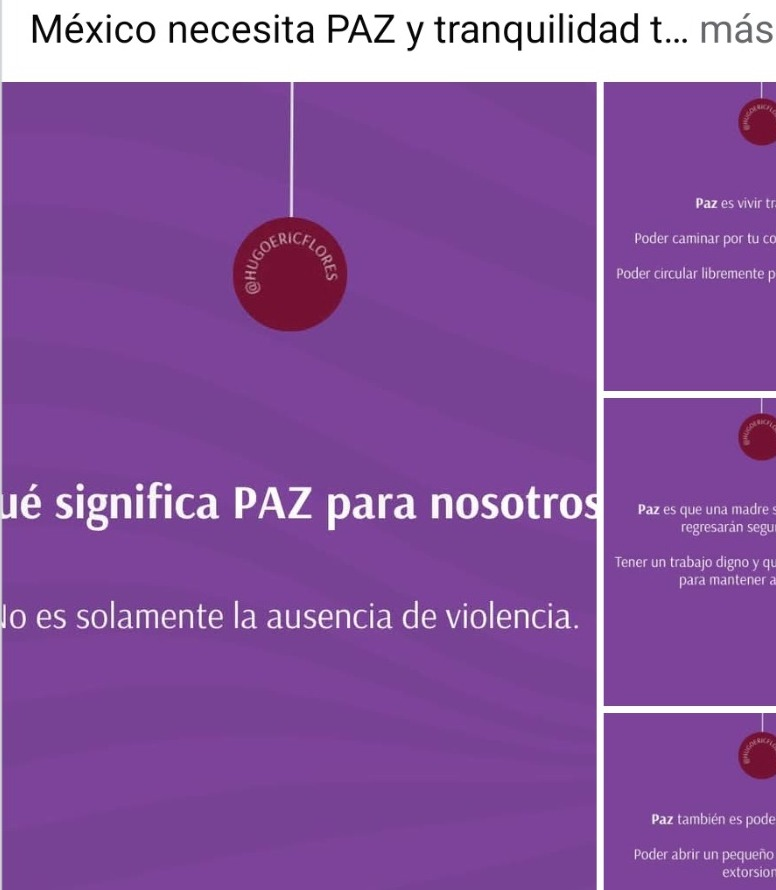
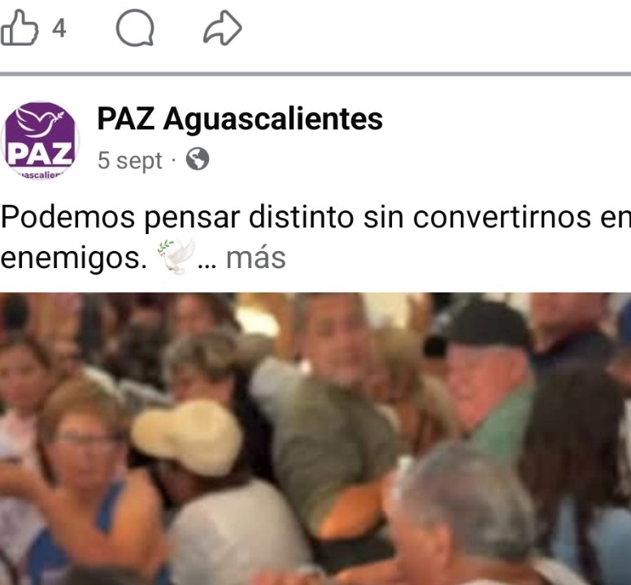

01 · Justicia social
PAZ con oportunidades
Una narrativa que liga la paz con trabajo digno, desarrollo personal y condiciones justas para salir adelante.
Esta propuesta traduce el estilo visual de sus publicaciones a una página moderna, clara y responsive: mucho morado, bloques potentes, mensajes directos y una identidad pensada para informar, sumar y dar presencia digital al proyecto en Aguascalientes.
La idea es comunicar una PAZ que hable de justicia social, diálogo, salud mental, oportunidades y convivencia digna para todas y todos.

Tipografía fuerte, mensajes grandes, contraste alto y una narrativa enfocada en las personas y sus problemas reales.
Tomando como base las publicaciones compartidas, el sitio se estructura alrededor de cuatro mensajes centrales que pueden escalarse después a noticias, formularios, comités, agenda y contacto oficial.
Una narrativa que liga la paz con trabajo digno, desarrollo personal y condiciones justas para salir adelante.
Un enfoque sensible y útil para tocar temas de prevención, escucha, empatía y acompañamiento social.
La paz también se cuenta desde la capacidad de pensar distinto sin volvernos enemigos.
Un lenguaje cercano que conecta con barrios, colonias, familias, jóvenes y ciudadanía en general.
La paz no significa solamente vivir sin conflictos. También significa construir una sociedad donde todas las personas tengan oportunidades para salir adelante, trabajar con dignidad y desarrollar su potencial.
Cuando existen desigualdades que limitan las oportunidades, la paz también se pone en riesgo. Por eso, una web política fuerte debe hablar no sólo de ideales, sino de condiciones reales de vida.
En las publicaciones compartidas aparece una línea importante: la prevención del suicidio y el valor de hablar del tema con empatía. En una web, esto puede convertirse en una sección informativa con mensajes responsables, directorios y campañas de concientización.

La imagen usada aquí proviene del material que compartiste. En una versión futura de la web, esta sección puede enlazar a fuentes oficiales, campañas, líneas de ayuda y contenido preventivo permanente.La gráfica compartida en morado puede traducirse a una sección muy poderosa dentro del sitio: una definición concreta y humana de lo que PAZ representa en la vida cotidiana de la ciudadanía.
Más que ausencia de violencia, aquí la paz se plantea como seguridad, libertad y dignidad para todas y todos.
La política no tiene que convertirse en guerra; la página puede insistir en el respeto y el encuentro.
Un diseño cálido y directo hace que el mensaje se sienta cercano a familias, jóvenes y ciudadanía.


Esta versión ya queda pensada como landing page real para GitHub Pages: responsive, en un solo HTML y con archivos de imagen en la raíz. Después se le pueden agregar noticias, comité estatal, agenda, contacto oficial, secciones por temas, formulario de afiliación y botones a redes.